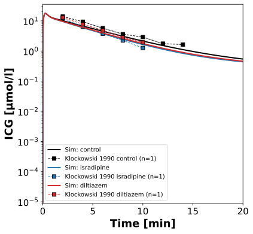
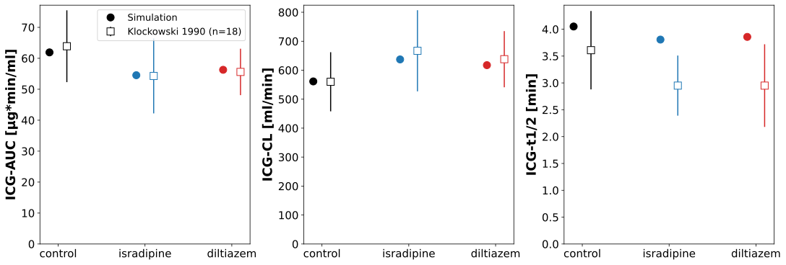

Overview
Models
| model | source |
|---|---|
| model | icg_body_flat.xml |
Datasets
Figures (2)




Code
"""Simulation experiment of the study Klockowski1990."""
from typing import ClassVar, override
import matplotlib.pyplot as plt
import numpy as np
from pkpdsim.metadata import (
ApplicationForm,
Coadministration,
DataType,
Dosing,
Fasting,
Health,
PKPDData,
PKPDMappingMetaData,
Route,
Tissue,
)
from sbmlsim import Q
from sbmlsim.data import DataSet
from sbmlsim.fit import FitData, FitMapping
from sbmlsim.plot import Axis, Figure
from sbmlsim.plot.serialization_matplotlib import FigureMPL
from sbmlsim.simulation import Simulation
from sbmlsim.units import Quantity
from pkdb_models.models.icg.experiments.base_experiment import ICGSimulationExperiment
class Klockowski1990(ICGSimulationExperiment):
"""Simulation experiment of Klockowski1990.
Intravenous bolus of indocyanine green (0.5 mg/kg, 5 s) in 18 healthy
elderly subjects (65 - 80 years) on the third day of placebo, isradipine
(5 mg every 12 h) or diltiazem (90 mg every 8 h), randomized crossover,
90 min after the morning dose; plasma samples every 2 min for 20 min. The
timecourses (Fig 3) are of a typical subject (No. 14), the
pharmacokinetic parameters (Table II, non-compartmental, mean +- SD) of all
18. The body weight is the mean of Table II (CL 560 ml/min over 8.06
ml/min/kg = 69.5 kg), the individual body weights are not reported; the
elderly are simulated with the physiology of the model.
The calcium antagonists increased the clearance of indocyanine green by
19 % (isradipine) and 14 % (diltiazem), which the authors attribute to an
increase of the hepatic blood flow by the vasodilation. The interaction is
simulated as an increase of the hepatic blood flow (`f_bloodflow`) by the
observed ratio of the clearance, the increase of the flow which a fully
flow-limited clearance would need; the arms are validation data, the
factors are not fitted.
"""
#: mean body weight of the subjects [kg]
bodyweight: ClassVar[float] = 69.5
#: the samples of the study, the window of the log-linear regression of
#: the elimination rate [min]
window: ClassVar[tuple[float, float]] = (2.0, 20.0)
#: the arms: the label of the curation, the factor of the hepatic blood
#: flow (the observed ratio of the clearance to placebo, Table II: 667/560
#: and 638/560) and the color
arms: ClassVar[dict[str, tuple[float, str]]] = {
"control": (1.0, "black"),
"isradipine": (667 / 560, "tab:blue"),
"diltiazem": (638 / 560, "tab:red"),
}
#: the interventions of the curation of the arms
interventions: ClassVar[dict[str, str]] = {
"control": "ICG",
"isradipine": "ICG, I -48, I -36, I -24, I -12, I +0",
"diltiazem": "ICG, D -48, D -40, D -32, D -24, D -16, D -8, D +0",
}
#: the coadministration of the arms (isradipine is not a member of the
#: vocabulary of pkpdsim)
coadministrations: ClassVar[dict[str, Coadministration]] = {
"control": Coadministration.NONE,
"isradipine": Coadministration.COMEDICATION,
"diltiazem": Coadministration.DILTIAZEM,
}
@override
def datasets(self) -> dict[str, DataSet]:
dsets = {}
# timecourses of the typical subject by arm
df = self.load_dataframe("Fig3")
for label in self.arms:
dset = DataSet.from_df(df[df.label == label], self.ureg)
dset.unit_conversion("value", 1 / self.Mr.icg)
dsets[self.to_sid(f"Fig3_ICG_{label}")] = dset
# pharmacokinetic parameters by arm
df = self.load_dataframe("Tab2")
for label, intervention in self.interventions.items():
for measurement in df.measurement_type.unique():
df_subset = df[
(df.measurement_type == measurement)
& (df.intervention == intervention)
]
dsets[self.to_sid(f"Tab2_{measurement}_{label}")] = DataSet.from_df(
df_subset, self.ureg
)
return dsets
@override
def simulations(self) -> dict[str, Simulation]:
# icg, iv, 0.5 [mg/kg] at the mean body weight; the samples to 20 min
return {
self.to_sid(f"icg_iv_{label}"): Simulation(
time_unit="min",
end=20,
preinit_changes={
**self.default_changes(),
"BW": Q(self.bodyweight, "kg"),
"IVDOSE_icg": Q(0.5 * self.bodyweight, "mg"),
"f_bloodflow": Q(f_bloodflow, "dimensionless"),
},
)
for label, (f_bloodflow, _) in self.arms.items()
}
@override
def fit_mappings(self) -> dict[str, FitMapping]:
mappings = {}
for label in self.arms:
key = "fm_Cve_icg" if label == "control" else f"fm_Cve_icg_{label}"
mappings[self.to_sid(key)] = FitMapping(
self,
reference=FitData(
self,
dataset=self.to_sid(f"Fig3_ICG_{label}"),
xid="time",
yid="value",
count="count",
),
observable=FitData(
self,
task=self.to_sid(f"task_icg_iv_{label}"),
xid="time",
yid="[Cve_icg]",
),
metadata=PKPDMappingMetaData(
tissue=Tissue.PLASMA,
route=Route.IV,
application_form=ApplicationForm.SOLUTION,
dosing=Dosing.SINGLE,
health=Health.HEALTHY,
fasting=Fasting.NR,
coadministration=self.coadministrations[label],
data=PKPDData.PK,
data_type=DataType.INDIVIDUAL,
),
)
return mappings
@override
def figures(self) -> dict[str, Figure]:
fig = Figure(experiment=self, sid="Fig3", width=6, height=6)
plots = fig.create_plots(
xaxis=Axis("Time", unit=self.unit_time, min=0, max=20), legend=True
)
plots[0].set_yaxis("ICG", self.unit_icg, scale="log")
for label, (_, color) in self.arms.items():
# simulation
plots[0].add_data(
task=self.to_sid(f"task_icg_iv_{label}"),
xid="time",
yid="[Cve_icg]",
xunit=self.unit_time,
yunit=self.unit_icg,
label=f"Sim: {label}",
color=color,
)
# data
plots[0].add_data(
dataset=self.to_sid(f"Fig3_ICG_{label}"),
xid="time",
yid="value",
xunit=self.unit_time,
yunit=self.unit_icg,
count="count",
color=color,
label=f"Klockowski 1990 {label}",
)
return {"fig3": fig}
@override
def figures_mpl(self) -> dict[str, FigureMPL]:
self.pk_dfs = self.calculate_icg_pk(window=self.window)
return {**self._figure_pk()}
def _study_parameters(self, arm: str) -> dict[str, Quantity]:
"""Get the parameters of the study of the simulation of an arm.
The parameters as the study computed them from its samples: the
elimination rate `kel` of the log-linear regression of the samples
(2 - 20 min, `window`), the half-life ln 2/`kel`, the area to the last
sample extrapolated to infinity with `clast/kel` and the clearance, the
dose over the area. One value per draw in a run over the draws.
"""
df = self.pk_dfs[self.to_sid(f"icg_iv_{arm}")]
def quantity(key: str) -> Quantity:
"""Get a parameter of the simulation with its unit."""
return Q(df[key].to_numpy(dtype=float), df[f"{key}_unit"].iloc[0])
kel = quantity("kel")
auc = quantity("auc_last") + quantity("clast") / kel
return {
"auc": (auc * self.Mr.icg).to("µg*min/ml"),
"cl": (quantity("dose") / auc).to("ml/min"),
"thalf": (np.log(2) / kel).to("min"),
}
def _figure_pk(self) -> dict[str, FigureMPL]:
"""Pharmacokinetic parameters of the arms, simulation and Table II."""
# dataset, label and unit of the parameters of the study
parameters = {
"auc": ("auc_inf", "AUC", "µg*min/ml"),
"cl": ("clearance", "CL", "ml/min"),
"thalf": ("thalf", "t1/2", "min"),
}
f, axes = plt.subplots(
nrows=1, ncols=len(parameters), figsize=(15, 5), layout="constrained"
)
x = np.arange(len(self.arms))
study = {arm: self._study_parameters(arm) for arm in self.arms}
for ax, (key, (measurement, label, unit)) in zip(
axes, parameters.items(), strict=True
):
for k, (arm, (_, color)) in enumerate(self.arms.items()):
values = study[arm][key].to(unit).magnitude
if self.uncertainty is None:
median = values[0]
yerr = None
else:
lower, median, upper = np.quantile(
values,
[
self.uncertainty.quantiles[0],
0.5,
self.uncertainty.quantiles[1],
],
)
yerr = [[median - lower], [upper - median]]
ax.errorbar(
x[k] - 0.1,
median,
yerr=yerr,
marker="o",
linestyle="",
color=color,
ms=10,
label="Simulation" if k == 0 else None,
)
dset = self._datasets[self.to_sid(f"Tab2_{measurement}_{arm}")]
# the standard deviation has the unit of the mean
mean = dset.get_quantity("mean").to(unit).magnitude
ax.errorbar(
x[k] + 0.1,
mean,
yerr=mean * dset["mean_sd"].to_numpy() / dset["mean"].to_numpy(),
marker="s",
linestyle="",
color=color,
mfc="white",
ms=10,
label="Klockowski 1990 (n=18)" if k == 0 else None,
)
ax.set_xticks(x, list(self.arms))
ax.set_ylabel(f"ICG-{label} [{unit}]", fontdict=self.font)
ax.set_ylim(bottom=0)
ax.tick_params(labelsize=self.tick_font_size)
axes[0].legend(fontsize=self.legend_font_size)
return {"fig_pk": f}